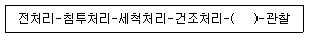
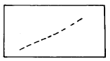
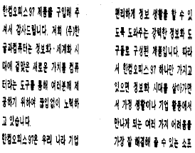
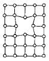
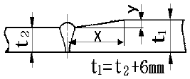
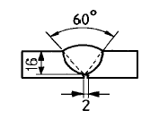
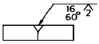
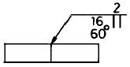
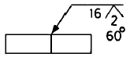
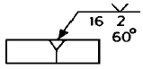

침투비파괴검사산업기사(구) (2002-09-08 기출문제)
1과목: 침투탐상시험원리
1. 자분탐상검사를 수행할 때 검사품에 전극을 직접 접촉시켜서 통전하는 방법이 아닌 것은?
- 축통전접
- 직각 통전법
- 프로드법
- 자속 관통법
(정답률: 알수없음)

2. 탐상제의 성능분석에서 적용하기 전에 황의 함유량에 대하여 분석을 실시해야 하는 금속은?
- 알루미늄
- 티타늄
- 오스테나이트계 스텐레스강
- 니켈
(정답률: 알수없음)
3. 침투탐상시험의 유화처리에 관한 설명으로 옳지 않은 것은?
- 유화제는 시험체에 접촉되어 계속 반응하기 때문에 과유화되는 것을 방지하기 위하여 세척을 빠르게 수행하여야 한다.
- 유화시간은 시험체 표면의 거칠기, 유화제의 화학적 조성 등에 따라 달라진다.
- 수성유화제를 적용하는 경우는 유화제 적용에 앞서 미리 1차 수세를 하여야 한다.
- 수성유화제는 유성유화제보다 반응이 빠르기 때문에 세척을 빠르게 수행해야 된다.
(정답률: 알수없음)
4. 침투탐상시험시 시험체의 온도가 낮은 경우에 나타나는 검사결과의 신뢰성에 관한 설명이다. 다음 중 옳지 않은 것은?
- 침투제의 점도가 낮아져 탐상감도가 낮아진다.
- 침투제의 침투속도가 낮아져 탐상감도가 낮아진다.
- 시험체를 가열하면 침투력이 개선될 수 있다.
- 침투제의 형광 특성이 나빠진다.
(정답률: 알수없음)
5. 다른 침투탐상시험과 비교하였을 때 염색 침투탐상시험의 장점으로 옳은 것은?
- 작은 결함탐상에 감도가 우수하다.
- 유화제를 쓰지 않기 때문에 값이 싸다.
- 휘발성이 강하기 때문에 시험에 긴 시간을 요하지 않는다.
- 보통 가시광선하에서 시험할 수 있으며, 휴대하기가 용이하다.
(정답률: 알수없음)
6. 수세성 형광침투시험에서 건조처리의 순서로 틀린 것은?
- 습식현상법 : 현상 처리후에 한다.
- 속건식현상법 : 세척 처리후에 한다.
- 건식현상법 : 세척 처리후에 한다.
- 무현상법 : 현상 처리후에 한다.
(정답률: 알수없음)
7. 침투탐상시험시 무관련지시와 관련지시를 구분하는 방법으로 적절하지 않은 것은?
- 의심되는 부위를 육안으로 검사한다.
- 지시의 형태를 분석한다.
- 지시 위에 다시 현상제를 적용한다.
- 다른 비파괴검사법으로 재검사한다.
(정답률: 알수없음)
8. 침투제의 점도에 대한 설명으로 옳은 것은?
- 점도가 높아지면 침투율이 높아진다.
- 점도는 침투력에 영향을 미치지 않는다.
- 점도가 높아지면 얕고 넓은 결함탐상시 감도가 높아진다.
- 점도는 제조시 일차적으로 결정되지만 온도에 따라서 도 많이 달라진다.
(정답률: 알수없음)
9. 침투제의 수세성시험을 할 때 주로 사용되는 시험편은?
- 한쪽표면에 균열을 발생시킨 알루미늄 합금판
- 양쪽표면에 균열을 발생시킨 알루미늄 합금판
- 샌드브라스트한 스텐레스 판
- 양면이 깨끗한 알루미늄 합금판
(정답률: 알수없음)
10. 속건식현상제의 적용법으로 가장 효율성이 클 것으로 예상되는 것은?
- 분무법
- 걸레질
- 솔질법
- 침지법
(정답률: 알수없음)
11. 침투탐상시험의 침투제 오염에 대한 설명중 틀린 것은?
- 수세성이 물에 오염되면 침투능이나 수세성이 나빠진다.
- 후유화성은 물에 오염되면 침투능이나 수세성이 나빠진다.
- 후유화성은 산 등 이물질에 오염되면 적심성, 형광성 등이 나빠진다.
- 유기물에 오염되면 염료를 희석시키게 된다.
(정답률: 알수없음)
12. 침투탐상시험 중 가장 감도가 높은 검사법은?
- 수세성 형광침투탐상법
- 후유화성 형광침투탐상법
- 용제제거성 형광침투탐상법
- 기름이 사용된 염색법
(정답률: 알수없음)
13. 분무법으로 적용할 때 수성유화제의 물에 의한 농축도는?
- 5∼10%
- 10∼20%
- 0.01∼0.⑤%
- 0.⑤∼5%
(정답률: 알수없음)
14. 적심성은 접촉각으로 측정된다. 다음 중 적심성이 가장 좋은 접촉각은?
- 20°
- 60°
- 90°
- 120°
(정답률: 알수없음)
15. 형광침투탐상시험에서 침투시간이 경과한 후 과잉의 수세성 침투제를 제거하는 바람직한 방법은?
- 저압의 물로 분사
- 물과 솔질
- 강한 물줄기
- 물과 깨끗한 헝겊
(정답률: 알수없음)
16. 염색침투탐상시험에서 다음 중 허위지시가 가장 잘 나타날 수 있는 조건은?
- 과잉 세척
- 현상제의 부적절한 적용
- 섬유질 또는 먼지 오염
- 침투제의 침투시 외기조건이 너무 차가워서
(정답률: 알수없음)
17. 시험체의 형상이 복잡하거나 표면 조건이 비교적 거칠은 제품의 검사에 적합한 방법은?
- 형광침투, 수세법
- 염색침투, 수세법
- 형광침투, 용제법
- 염색침투, 용제법
(정답률: 알수없음)
18. 강 및 비철재료의 압출품, 단조품을 침투탐상검사할 때 가장 적절한 시험온도와 침투시간은?
- 15∼50℃ 범위에서 최소 5분
- 15∼50℃ 범위에서 최소 10분
- 0∼15℃ 범위에서 최소 5분
- 0∼15℃ 범위에서 최소 10분
(정답률: 알수없음)
19. 침투탐상검사 작업에서 적절한 침투시간을 결정하는데 영향을 미치는 중요한 요인은?
- 시험체의 모양
- 검출 대상 결함의 종류
- 시험체의 크기
- 탐상면의 표면 거칠기
(정답률: 알수없음)
20. 부품의 양끝을 베어링이 지지하고 있는 회전체에서 베어링의 손상 여부를, 기기를 정지시키지 않고 가동 중에 계속 감시하기에 적합한 비파괴검사법은?
- 방사선투과검사
- 초음파탐상검사
- 침투탐상검사
- 음향방출검사
(정답률: 알수없음)
2과목: 침투탐상검사
21. 형광침투탐상시험시 암실에서 자외선을 조사하기전 눈의 적응시간은 몇 분정도 이상이 적합한가?
- 10초이상
- 1분이상
- 3분이상
- 5분이상
(정답률: 알수없음)
22. 페인트가 칠해진 부분에 침투탐상시험을 실시할 경우 첫 단계는?
- 표면에 침투액을 조심스럽게 뿌린다.
- 표면을 거칠게 하기 위해 털솔질을 한다.
- 세척제로 표면을 세척한다.
- 페인트를 완전히 제거한다.
(정답률: 알수없음)
23. 침투탐상검사는 대부분의 재료에 대해 적용할 수 있으나 재료의 특성상 침투탐상검사를 적용하기 곤란한 것도 있다. 다음 중 어떤 재료가 곤란한 경우인가?
- 스테인리스 강
- 세라믹
- 플라스틱
- 콘크리트
(정답률: 알수없음)
24. 에어졸형 용제제거성 침투탐상제에 대한 설명으로 틀린 것은?
- 액화석유가스 등의 분사가스로 충전한 것이다.
- 보통 상온에서 1kgf/cm2이하의 압력이다.
- 온도에 따라 압력이 변하기 때문에 보관 및 사용온도에 주의가 필요하다.
- 온도를 올리기 위해 불로 직접 가열하여서는 안된다.
(정답률: 알수없음)
25. 침투탐상시험에서 의사지시가 나타날 수 있는 원인으로 잘못 기술된 것은?
- 전처리가 불충분하여 녹이나 스케일이 남아 있을 때
- 유화처리가 부적당하여 침투액이 표면에 잔존해 있을 경우
- 세척처리 부적당으로 침투액이 표면에 잔존해 있을 경우
- 용접부와 모재와의 접합부에 언더컷이 생겨 파여 있는 경우
(정답률: 알수없음)
26. 다음 중 단조품에서 쉽게 발견되는 결함이 아닌 것은?
- 개재물
- 융합부족
- 겹침
- 핫티어
(정답률: 알수없음)
27. 다음 중 증기세척법으로 세척이 되는 것은?
- 페인트
- 인산염 피막
- 기름
- 산화물
(정답률: 알수없음)
28. 수세성 형광침투탐상검사법의 순서를 적은 것이다. ( )안의 처리과정은?

- 형광처리
- 현상처리
- 유화처리
- 필요없음
(정답률: 알수없음)
29. 형광침투탐상시험시 시험체의 표면 온도로 적당한 것은?
- 5℃∼15℃
- 8℃∼32℃
- 15℃∼50℃
- 40℃∼80℃
(정답률: 알수없음)
30. 용제제거성 침투탐상검사시의 과잉침투제 제거처리 방법 중 옳지 않은 것은?
- 복잡한 곳부터 제거를 실시하여 단순한 부분은 나중에 실시한다.
- 건조하고 깨끗한 천 또는 종이로 닦아낼 수 있는 한과잉침투액을 제거한다.
- 건조한 천 또는 종이로 여러 번 표면을 닦아 낸다.
- 건조한 천, 깨끗한 천 또는 종이로 제거되지 않은 잉여 침투액은 천 또는 종이에 세정제를 소량 묻혀서 가볍게 닦아 낸다.
(정답률: 알수없음)
31. 침투탐상 검사제의 하나인 유화제의 시험에 속하는 것은?
- 감도시험
- 점성시험
- 형광퇴색정도시험
- 누설시험
(정답률: 알수없음)
32. 다음 중 주물결함이 아닌 것은?
- 스트링거(stringer)
- 수축공(shrinkage)
- 기공(porosity)
- 콜드셧(cold shut)
(정답률: 알수없음)
33. 침투탐상시험에서 건조한 백색 미분말의 현상제를 그대로 사용하는 방법은?
- 건식 현상법
- 속건식 현상법
- 습식 현상법
- 무현상법
(정답률: 알수없음)
34. 정적 침투인자는 액체의 침투성과 관련이 있다. 이 인자에서 액체의 침투를 조절하는 성질은?
- 접촉각과 점성
- 접촉각과 모세관현상
- 표면장력과 접촉각
- 모세관현상과 표면장력
(정답률: 알수없음)
35. 암실의 조도가 10룩스(lx)인 곳에서 형광침투탐상시험을 할 때 미세한 균열을 검출할 수 있는 검사 표면에서의 최소 자외선 강도(㎼/cm2)는?
- 30
- 500
- 1,000
- 2,000
(정답률: 알수없음)
36. 다음 중 침투액을 물로 제거할 수 있게 하는 물질은?
- 침투제
- 현상제
- 세척제
- 유화제
(정답률: 알수없음)
37. 침투탐상시험에서 미세한 균열을 탐상하기에 가장 좋은 검사방법은?
- 수세법
- 후유화제법
- 용제법
- 무현상법
(정답률: 알수없음)
38. 형광침투액의 불충분한 세척시 어떤 결과를 가져오는가?
- 현상제의 사용을 어렵게 한다.
- 너무 많이 스며 나오게 한다.
- 건전부에서의 형광 대조색이 지나치게 된다.
- 시험체 표면에 후발성 부식이 된다.
(정답률: 알수없음)
39. 침투탐상시험을 하여 그림과 같은 지시모양이 나왔다면 어떤 결함으로 간주하는가?

- 작은 균열
- 기공
- 선상결함
- 터짐
(정답률: 알수없음)
40. 모래 주조법(sand casting)으로 만든 알루미늄 제품의 수축균열을 침투탐상시험할 때의 일반적인 검사 방법은?
- 수세성 침투제, 건식현상제
- 수세성 침투제, 습식현상제
- 후유화성 침투제, 속건식현상제
- 후유화성 침투제, 습식현상제
(정답률: 알수없음)
3과목: 침투탐상관련규격
41. 다음 프로그램중에서 기능이 서로 다른 한가지는?
- Winzip
- Winrar
- Winsock
- Winarj
(정답률: 알수없음)
42. 다음은 국가를 나타내는 도메인들이다. 영국에 해당하는 도메인 명은?
- au
- ca
- uk
- fr
(정답률: 알수없음)
43. ASME 규격에 따라 철판제품에 용제제거성 염색침투액을 사용하였을 때 권고되는 최소 침투시간은?
- 5분
- 7분
- 10분
- 20분
(정답률: 알수없음)
44. KS B 0816 규정에 따른 유화시간에 대한 설명이다. 다음 중 틀린 것은?
- 기름베이스 유화제를 사용하는 시험에서 형광침투액 사용시 최대 3분이내
- 기름베이스 유화제를 사용하는 시험에서 염색침투액 사용시 최대 30초이내
- 물베이스 유화제를 사용하는 시험에서 형광침투액 사용시 최대 2분이내
- 물베이스 유화제를 사용하는 시험에서 염색침투액 사용시 최대 20초이내
(정답률: 알수없음)
45. ASME Sec.V Art.6에서 규정한 과잉침투제 제거용 물의 온도로 적합한 것은?
- 100℉
- 120℉
- 140℉
- 160℉
(정답률: 알수없음)
46. ASTM E 165에 따라 원자력발전 부품에 형광침투탐상법을 적용시 자외선등의 예열시간은 얼마 이상이어야 하는가?
- 3분
- 5분
- 10분
- 15분
(정답률: 알수없음)
47. KS W 0914에 따르면 침투액을 나타내는 기호 중 염색침투액 계통을 나타낸 것은?
- 타입Ⅰ
- 타입Ⅱ
- 타입Ⅲ
- 타입Ⅳ
(정답률: 알수없음)
48. KS B 0816에서 규정한 B형 대비시험편에 대한 내용이다. 다음 중 틀린 것은?
- 탐상제의 성능 및 조작방법의 적합여부를 조사하는데 사용한다.
- 시험편은 도금의 두께에 따라 4종류로 나눈다.
- 시험편의 재료는 KS D 6701에서 규정한 A 2024P로 한다.
- 도금은 시험편 재료에 니켈도금을 한 후 다시 크롬도금을 한다.
(정답률: 알수없음)
49. 한글97에서 우측과 같은 문서 양식을 만들려고 한다. 어떠한 기능을 사용해야 하는가?

- 장평
- 자간
- 다단
- 페이지 속성
(정답률: 알수없음)
50. KS B 0816에서 갈라짐 이외의 결함으로 그 길이가 나비의 3배 이상인 것을 무슨 결함이라 하는가?
- 균열
- 라미네이션
- 원형상 결함
- 선상 결함
(정답률: 알수없음)
51. LAN을 구성하는 위상(Topology)의 형태로 중앙에 허브 컴퓨터를 두고 모든 PC가 주 허브컴퓨터에 연결된 방식은?
- 스타형
- 링형
- 버스형
- 트리형
(정답률: 알수없음)
52. ASME Sec.Ⅲ 또는 Ⅷ에서 요구하는 지시의 평가방법을 틀리게 설명한 것은?
- 비관련지시로 판단되는 지시는 일단 결함으로 간주하고 재시험 또는 다른 비파괴시험을 실시하여 확인한다.
- 결함지시를 가리는 비관련지시는 불합격으로 한다.
- 선형지시는 그 길이에 2배를 더한 값으로 평가를 한다.
- 원형지시는 길이가 폭의 3배이하인 원형 또는 타원형 모양이다.
(정답률: 알수없음)
53. KS B 0816에 의한 강용접부의 침투탐상시험시 침투시간은 15∼50℃의 온도범위에서 몇 분을 표준으로 하는가?
- 5분
- 7분
- 10분
- 15분
(정답률: 알수없음)
54. KS B 0816에 규정된 A형 대비시험편의 규격(㎜)은? (단, 크기는 가로x세로x두께)
- 75x50x(8∼10)
- 30x60x(10∼12)
- 60x90x(10∼12)
- 60x60x(8∼10)
(정답률: 알수없음)
55. KS B 0816에 따른 침투탐상시험에서 다음 중 유화장치와 자외선 조사장치가 필요한 시험법은?
- FA-D
- FB-W
- FC-D
- VC-W
(정답률: 알수없음)
56. ASME Sec.V, Art6에 따른 자외선강도 측정에 관한 설명이다. 다음 중 틀린 것은?
- 최소 8시간마다 강도측정을 해야 한다.
- 검사 장소가 변경될 때마다 강도측정을 해야 한다.
- 검사원이 바뀔 때마다 강도측정을 해야 한다.
- 검사체의 표면에서 최소 1,000㎼/cm2의 강도를 나타내야 한다.
(정답률: 알수없음)
57. KS B 0816에 따라 침투탐상시험을 전수검사한 후 합격품에 표시하는 방법을 설명하였다. 잘못된 것은?
- 각인으로 P의 기호를 사용한다.
- 부식으로 P의 기호를 사용한다.
- 착색(적갈색)에 의해 P의 기호를 사용한다.
- 표시가 시험품에 곤란한 경우 흰색으로 착색하여 표시한다.
(정답률: 알수없음)
58. KS W 0914에 따라 터빈 엔진의 중요 구성부품 정비검사는 다음 중 어떤 침투 탐상제를 사용하는가?
- 타입I, 방법 D, 감도레벨 3
- 타입I, 방법 A, 감도레벨 4
- 타입Ⅱ, 방법 D, 감도레벨 4
- 타입Ⅱ, 방법 A, 감도레벨 3
(정답률: 알수없음)
59. ASME 규격에 따르면, 침투 탐상제의 불순물(황) 관리는 침투제 50g을 증발접시에 담아 90∼100℃의 온도로 60분간 가열시킨 후 남은 잔류물을 분석하여 0.0025g미만이면 탐상이 가능하고 이상이면 재분석 후 황의 함유량이 잔류물 무게비 몇 %를 초과해서는 안되는가?
- 1%
- 2%
- 3%
- 5%
(정답률: 알수없음)
60. ASME Sec.V Art.6에서 규정한 알루미늄 주물품의 균열을 검출하고자할 때 후유화 형광침투제의 최소 침투시간은?
- 5분
- 7분
- 10분
- 14분
(정답률: 알수없음)
4과목: 금속재료 및 용접일반
61. 철(Fe)의 동소변태에 관한 설명 중 옳지 않은 것은?
- 일정온도에서 급격히 비연속으로 일어난다.
- 동일물질에서 원자배열의 변화로 생긴다.
- 철의 동소변태는 A3 와 A4이며 가역적이다.
- 동소변태는 가열시 변태온도보다 냉각시 변태온도가 높다.
(정답률: 알수없음)
62. 아크 용접시 비드 시점의 불완전 용착부나 종점의 크레이터를 방지하기 위하여 사용하는 것은?
- 엔드 텝(end tab)
- 받침(backing)
- 콤비네이션 스퀘어(combination square)
- 접지 클램프(ground clamp)
(정답률: 알수없음)
63. 저항용접의 3대 필요조건이 아닌 것은?
- 용접전류
- 용접전압
- 통전시간
- 가압력
(정답률: 알수없음)
64. 아크 전류가 200A이고, 아크 전압이 30V, 무부하 전압이 60V일 때, 이 교류 용접기의 역률은 얼마인가? (단, 내부 손실은 없다.)
- 30%
- 40%
- 50%
- 60%
(정답률: 알수없음)
65. 그림과 같은 격자 결함의 구조명은?

- 모자이크 구조(mosaic block)
- 공격자점(vacancy)
- 점결함(point defect)
- 격자간 원자(interstitial atom)
(정답률: 알수없음)
66. 분말야금의 소결방법에서 고온압착법에 관한 일반적인 설명 중 옳은 것은?
- 기공이 없는 소결체를 얻을 수 있다.
- 대량생산방식에 적합하다.
- 소결시간이 많이 소요된다.
- 형틀에 소요되는 비용이 상대적으로 저렴하다.
(정답률: 알수없음)
67. 불활성 가스 텅스텐 아크용접법으로 스테인리스 강판을 접합할 때, 용접 준비사항에 대한 설명으로 틀린 것은?
- 정확한 홈 가공이 필요하다.
- 용접 전 홈 부분의 청소를 철저히 한다.
- 전극봉은 토륨 텅스텐봉을 사용한다.
- 전극봉 끝은 둥글게 하여 용접 표면에 넓게 청정작용을 할 수 있도록 한다.
(정답률: 알수없음)
68. Fe3C가 큰 형태로 있을 때 구상화 처리의 가장 적합한 방법은?
- A3선 상까지 가열하고 냉각시킨다.
- A2변태점 이상의 온도에서 장시간 가열한 후 냉각시킨다.
- A1변태점 상하 20∼30℃간에서 가열과 냉각을 반복한다.
- Acm선 상까지 가열해서 냉각시킨다.
(정답률: 알수없음)
69. 진공(vacuum)상태에서의 납땜(brazing)법인 것은?
- 노내 경납땜(furnace brazing)
- 아크 경납땜(arc brazing)
- 저항 경납땜(resistance brazing)
- 담금 경납땜(dip brazing)
(정답률: 알수없음)
70. 용접 이음부 밑쪽에 녹지 않은 짧은 와이어가 붙어 있는 현상으로 용융지 선단으로 용접 와이어를 빨리 공급할때 일어나는 MIG 용접 이음의 결함은 무엇이라 하는가?
- 위스커스
- 스패터링
- 용융 부족
- 용입 부족
(정답률: 알수없음)
71. 제트기관, 가스터빈 등의 주요 부품에 사용되는 초내열 합금계가 아닌 것은?
- Ni - Cr계
- Ni - Cr - Co계
- Co - Cr - W계
- Mn - Cu - Pb계
(정답률: 알수없음)
72. 그림과 같이 판 두께가 다른 맞대기 용접이음 설계할 때 맞대기 이음부의 기울기 x : y 는 다음 중 얼마로 하는 것이 가장 적합한가?

- 1.5 : 1
- 2 : 1
- 3 : 1
- 5 : 1
(정답률: 알수없음)
73. 가스용접 중 산소가 반대로 흐를 때(역류)의 주요 원인이 아닌 것은?
- 토치의 기능 불량
- 팁의 막힘
- 팁과 모재의 접촉
- 산소 압력의 과소
(정답률: 알수없음)
74. 순금속에 가장 가까운 것은?
- 청동
- 주철
- 구리
- 특수강
(정답률: 알수없음)
75. 물리적 성질이 아닌 것은?
- 비중
- 용융잠열
- 열팽창계수
- 충격흡수계수
(정답률: 알수없음)
76. 보기와 같은 용접부 형상의 용접 도시기호로 가장 적합한 것은?





(정답률: 알수없음)
77. 금속중에 0.01-0.1㎛ 정도의 미립자를 수% 정도 분사시켜 입자자체가 아니고 모체의 변형저항을 높여서 고온에서의 탄성률, 강도 및 크리프 특성을 개선시키기 위해 개발된 입자분산강화금속은?
- FRM(Fiber Reinforced Metals)
- MMC(Metal Matrix Composite)
- PSM(Particle Dispersed Strengthened Metals)
- FRS(Fiber Reinforced Super alloys)
(정답률: 알수없음)
78. 전연성이 매우 커서 10-6 cm 두께의 박판으로 가공할 수 있는 것은?
- Au
- Sn
- Ir
- Os
(정답률: 알수없음)
79. 용접 균열의 발생의 감소대책 설명으로 틀린 것은?
- 필릿용접의 루트부분의 힐 균열(heel crack)은 용접 입열을 크게하여 감소한다.
- 맞대기 이음 용접시 발생되는 토 균열(toe crack)은 예열 및 강도가 낮은용접봉을 사용한다
- 고탄소강 및 저합금강의 모재열 영향부의 비드밑균열(under bead crack)은 저수소계 용접봉을 사용한다.
- 맞대기용접의 가접시 발생되는 루트균열(root crack)은 수소량의 감소를 위하여 예열 및 후열을 한다.
(정답률: 알수없음)
80. 0.4% C강을 담금질했을 때 확보할 수 있는 최고 담금질경도(HRC)는?
- 15
- 35
- 50
- 70
(정답률: 알수없음)